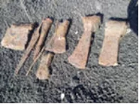
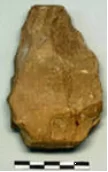
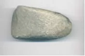
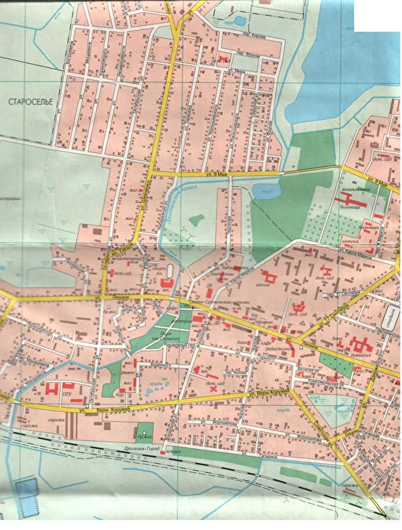

Дрогичин до летописных времён
Освоение удобной для земледелия, охоты и рыболовства речной поймы, расположенной среди вековых дубрав и боров, уходит своими корнями в далёкую древность. Какого рода было поселение на островах среди проток реки, названной позднее Пиной, неизвестно. Остаётся загадкой носило ли оно временный характер, либо было постоянным. Однако археологические находки в окрестностях Дрогичина свидетельствуют об освоении земель города ещё в эпоху бронзового века племенами земледельцев.



Орудия труда бронзового века
Особую роль в жизни поселений древнего Дрогичина всегда играла река. Пина имела в древности два истока. Оба они находились на Дрогичинщине: один (правый) – южнее д.Малиновка, другой (левый) – восточнее д.Ровины. Пройдя всего несколько километров от ровинского истока Пина разливалась в обширной низине Дрогичина, образуя множество рукавов и проток. Так, что известные в более поздние века поселения Довечеровичи, Дрогичин, Староселье и Заречка стояли словно на островах, связанных между собой множеством мостов и кладок.

Старая часть Дрогичина на современной карте города
Протока реки отделяла Староселье от Довечеровичей (Дрогичина). Несколько рукавов реки отрезали расположенную к западу деревню Заречку (в наши дни ул.Пушкина) от возвышенностей города.
Участники экспедиции "Пина" историко-краеведческого кружка СШ №1 г.Дрогичина обследовали участки древнего русла реки. Пробы грунтов доказывают речное происхождение большинства низинно-заболоченных районов Дрогичина. 1960-х годах к западу от ул. Октябрьской были найдены остатки носовой части лодки-долблёнки, несколько керамических грузил. Очевидно, река долгое времяиграла значительную роль в хозяйственной жизни поселения.